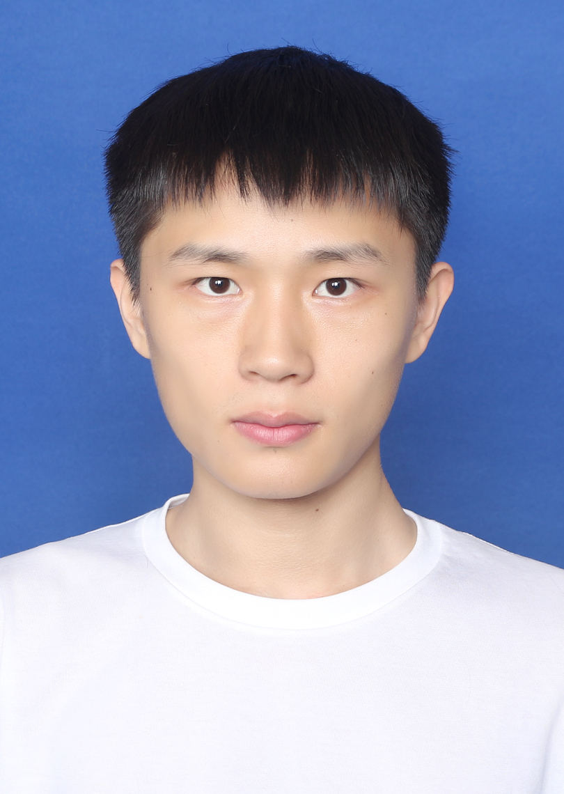
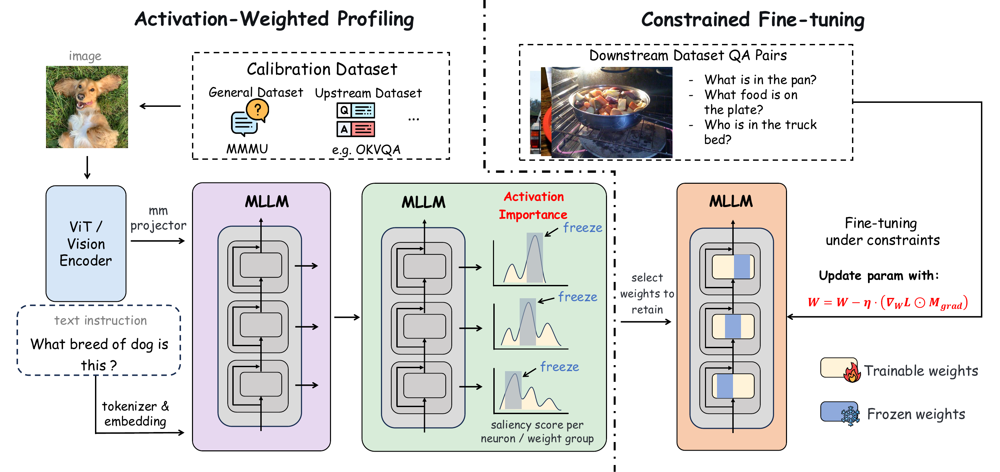

浙江大学
软件学院 · 软件工程硕士 · 推免
2025.09 – 2028.06（预计）
89.4GPA / 100
浙江大学 · 软件工程硕士
多模态学习 · 高效推理 · 具身智能

软件学院 · 软件工程硕士 · 推免
2025.09 – 2028.06（预计）
89.4GPA / 100

汽车工程学院 · 智能车辆工程本科
2021.09 – 2025.06
88.0GPA / 100
第一作者 · EMNLP 2026 Main
Mitigating Catastrophic Forgetting via Activation-Weighted Adaptive REtention

第二作者 · AAAI 2027（在投）
Lifecycle-Aware Audiovisual Token Compression for Omni-Modal Large Language Models
无需训练 · 兼容 FlashAttention
以上结果基于 Qwen2.5-Omni-7B。98.6% 为四项基准的平均性能保留比例；3.44× 为 WorldSense 上的解码器预填充加速。显存降低量相对于完整 Token 输入。
2025.04 – 至今
应用场景：工地安全检测，多模态模型训练与量化部署。
定位并修复早期 vLLM 的 NVFP4 支持缺陷，跑通量化部署流程，为 KV Cache 和更长上下文释放显存空间。
实习项目测试结果，模型性能基本保持不变。具体收益随硬件、模型与部署配置变化。
手眼标定 · 机械臂 SDK · FK / IK
仿真综合成功率约 85% · 尚未进行真机验证
问题：Blackwell GeForce（sm120）运行 FP8 模型时，沿用 sm100 Kernel 会触发内部错误。
工作：新增面向 sm120 的 CUTLASS W8A8 FP8 GEMM 支持，补齐新架构上的量化矩阵乘法路径。
验证：在 RTX 5070 Ti 上运行由 llm-compressor 量化的 Qwen2.5-VL-7B-Instruct-FP8-Dynamic，验证模型可以正常推理。
问题：部分 FP8-Dynamic 模型在新显卡上加载失败；已有方案通过回退到 Triton Kernel 绕过问题。
工作：在 sgl-kernel 中实现 sm120 的 CUTLASS FP8 GEMM，并添加对应的 Kernel 路由条件。
作用：为 RTX 50 系列补齐 CUTLASS FP8 推理路径，让相关量化模型可使用适配该架构的算子实现。
问题：compressed-tensors 配置中的视觉层名 attn.qkv 与框架内的 attn.qkv_proj 不一致，导致本应跳过量化的层仍被量化，影响图像理解输出。
工作：将模型类型传入量化配置，根据模型类型适配视觉注意力层的 ignore 名称，修正配置与实际模块之间的匹配。
范围：提案覆盖 Qwen2-VL、Qwen2.5-VL、InternVL 与 GLM4V，目标是保持原量化配置对视觉层的精度选择。
问题：以 vLLM 作为 Rollout 后端时，视频元数据未完整传递，导致视频请求报错；预处理还将图像 patch size 固定为 14。
工作：补齐视频及其元数据到处理器和 vLLM 的传递，将 image_patch_size 改为可配置参数。
作用：修复视频强化学习训练链路，并兼容 Qwen2.5-VL（patch size 14）与 Qwen3-VL（patch size 16）的预处理差异。
问题：使用 VeRL 对 GLM-4.1V 进行 GRPO 训练时，框架将检查点转换映射按字典处理，而模型中的值为 None，导致程序中断。
工作：将 _checkpoint_conversion_mapping 统一为空字典，同步修改模型的模块化定义与生成文件。
作用：消除模型与训练框架之间的类型不兼容，支持该训练链路正常读取模型的检查点转换配置。
2025.02 – 2025.04
2024.07 – 2024.08
2023.11 – 2024.02
自主学习，相关课程项目均独立完成。